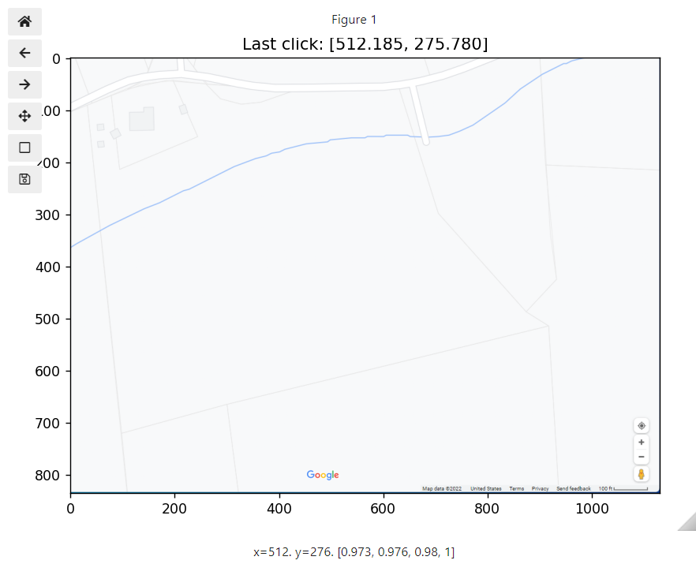

Selecting pixel coordinates from an image file
Contents
6. Selecting pixel coordinates from an image file#
Learning Objectives
After completing this lesson, you should be able to:
install a matplotlib extension for jupyterlab
open an image file into an interactive widget e.g. google map screen capture
select points on the image using your mouse, recording their locations
determine the scale to transform the pixel coordinates to real space coordinates
use these calibrated points to make geometric calculations e.g. distance, angle, area, and perimeter.
This is the first step in being able to reproduce and extract data from plots in the literature. Next week we will begin pulling data from publications, reanalyzing and then examing the validity of the author’s conclusions. In Senior Design, you may want to do something like this to directly plot data you collect along with data found in the literature for comparison.
Important
For this lesson, you will need to install a matplotlib extension to allow for interactive plots with jupyter lab. Open your powershell prompt from the Anaconda Navigator menu, type and execute the following: conda install -c conda-forge ipympl
It may give you a message that Anaconda is being downgraded. That is okay, type “yes” to proceed. Then after it is finished make sure you close down jupyterlab and restart it.
import matplotlib.pyplot as plt
import numpy as np
import matplotlib.image as mpimg
import matplotlib.pyplot as plt
import imageio as iio
import io
6.1. Load and Display our image#
The image below was a screen capture from google maps showing property lines for various tax parcels. We would like to know the total acreage of this property. We display an image by using .subplots() to create the figure and axes frame as we have done before but now we read an image .imshow() into the axes rather than plotting a set of data. Click on the image below to download so you can reproduce the code below.
# the following line gives an interactive plot; default is %matplotlib inline
%matplotlib widget
fig, ax1 = plt.subplots(nrows=1, ncols=1, figsize=(7, 5))
img=mpimg.imread('../images/3114_06_smith_creek.png')
ax1.imshow(img)
imgsize=img.shape #will use this below contains (ypixels, xpixels, colordepth)
fig.tight_layout()
{kind=link}
If you execute the code above in your own notebook and move your mouse around on the image, you will see the pixel coordinates for that location displayed at the bottom of the figure. The values in the brackets are the color code and opacity. We won’t need these. One of the things to notice is that when an image is read, the data is plotted from the top left corner, across the row, and then down to the next row. When dealing with coordinates for plots, we expect the origin to be located in the bottom-left corner so we will need to correct this next week when we read an image file of a data plot.
6.2. Selecting data from our image#
The following code will make the above plot interactive. There are several “events” that matplotlib can “listen” for. The one we use below is a simple mouse click event. When the cursor is moved on to the image and the mouse is left-clicked, the coordinate for the cursor location is stored into a variable we defined below called “pos” (short for position). We also add a title to the plot with the location of the cursor for the last click event. This is the only event type we will use in this class so don’t worry about the code below just store it somewhere handy such as your cheatsheet for later use.
#below all part of matplotlib -- remember for this to work we should have already run: %matplotlib widget
pos = []
def onclick(event):
pos.append([event.xdata,event.ydata])
ax1.set_title(f'Last click: [{event.xdata:.3f}, {event.ydata:.3f}]')
cid=fig.canvas.mpl_connect('button_press_event', onclick)
After running the above code, it might look like nothing happened. Scroll back up to the image plotted previously, and use the mouse to click somewhere. You should now see a title show up showing you the location of your click (as shown in the figure below). Now continue clicking a few points on the image. After this we can take a look at the points stored in the variable “pos.”
{kind=link}
Now start over, re-executing the previous cells to make a new interactive plot so we can include calibration points for the image scale bar. Let’s reclick on all your boundary points and then when finished with these click on the two ends of the scale bar. This way we can just pull the last two points off of our “pos” values for the calibration. We also should turn our list into a numpy array to make indexing easier when performing calculations. The first point that we select is going to become a common vertice as we break our polygon into triangles so choose wisely. Also the boundary points need to be chosen in order as you “walk” around the boundary.
The points that I chose are shown below.
display(pos)
[[97.53271352771536, 716.9389926874768],
[31.26412199934971, 90.22745566207607],
[192.20212999680916, 37.212582439383596],
[387.2211279231423, 65.61340738011177],
[633.3616107427861, 59.93324239196613],
[705.3103672592973, 292.8200069059368],
[873.8219285742842, 484.05222817350614],
[915.4764718206854, 514.3464414436162],
[1042.333489889271, 826.7555157916255],
[1106.708693088255, 828.6489041210074]]
… and plotted on top of our previous image. I’ve also numbered the points in the order that I selected them. The last two points are on the ends of the scale bar and shown in red.
%matplotlib inline
pts=np.array(pos[0:-2]) # take all points except last 2
calibration_bar_ends=np.array(pos[-2:]) # take only last 2 points
calibration_bar_length=100 #feet
scale=calibration_bar_length/np.abs(calibration_bar_ends[0,0]-calibration_bar_ends[1,0]) #feet/pixel
#plt.close(fig='all')
pts=np.append(pts,[pts[0]], axis=0) # making a copy of the first point and adding to our list to close our polygon when plotting
vert_pos=[[0,i+1,i+2] for i in np.arange(len(pts)-3)]
tri_data=[pts[vertices] for vertices in vert_pos]
fig1, ax2 = plt.subplots(nrows=1, ncols=1, figsize=(8, 6))
img=mpimg.imread('../images/3114_06_smith_creek.png')
ax2.imshow(img)
ax2.plot(pts[:,0],pts[:,1], 'ko-')
ax2.plot(calibration_bar_ends[:,0],calibration_bar_ends[:,1], 'ro')
[ax2.text(*pts[i]+(0,-30),str(i), size='large', backgroundcolor='white') for i in np.arange(len(pts)-1)]
[ax2.text(*calibration_bar_ends[i-len(pts)]+(0,-30),str(i), c='red', size='large', backgroundcolor='white') for i in np.arange(len(pts)-1, len(pts)+1)]
#[ax2.plot(tri_data[i][:,0], tri_data[i][:,1], '-') for i in np.arange(len(tri_data))]
plt.show()
6.3. Calculate the area#
pts=np.array(pos[0:-2]) # take all points except last 2
calibration_bar_ends=np.array(pos[-2:]) # take only last 2 points
calibration_bar_length=100 #feet
scale=calibration_bar_length/np.abs(calibration_bar_ends[0,0]-calibration_bar_ends[1,0]) #feet/pixel
#plt.close(fig='all')
pts=np.append(pts,[pts[0]], axis=0) # making a copy of the first point and adding to our list to close our polygon when plotting
vert_pos=[[0,i+1,i+2] for i in np.arange(len(pts)-3)]
tri_data=np.array([pts[vertices] for vertices in vert_pos])
fig1, ax2 = plt.subplots(nrows=1, ncols=1, figsize=(10, 8))
img=mpimg.imread('../images/3114_06_smith_creek.png')
ax2.imshow(img)
ax2.plot(pts[:,0],pts[:,1], 'ko-')
[ax2.text(*pts[i]+10,str(i)) for i in np.arange(len(pts)-1)]
[ax2.plot(tri_data[i,:,0], tri_data[i,:,1], '-') for i in np.arange(len(tri_data))]
plt.show()
Area of a triangle given the \(\left(x,y\right)\) coordinates of the vertices \(A,B,C\) =
def tri_area(vertice_list): #list of 3 vertices
A,B,C=0,1,2
x,y=0,1
return np.abs((vertice_list[A,x]*(vertice_list[B,y]-vertice_list[C,y])+vertice_list[B,x]*(vertice_list[C,y]-vertice_list[A,y])+vertice_list[C,x]*(vertice_list[A,y]-vertice_list[B,y])))/2
area=0
area = sum([tri_area(i) for i in tri_data])
print(f'The area is approximately {area*scale**2:.0f} square feet')
print(f'The area is approximately {area*scale**2/43560:.1f} acres')
The area is approximately 954676 square feet
The area is approximately 21.9 acres
In a similar way, you could manipulate the data to calculate the perimeter of the bounded property, the length of a edge, or the angle formed between two edges, etc.
6.4. Putting it all together#
Let’s calculate the total acreage north of the creek running through this property.
%matplotlib widget
import matplotlib.pyplot as plt
import numpy as np
import matplotlib.image as mpimg
fig, ax1 = plt.subplots(nrows=1, ncols=1, figsize=(8, 6))
img=mpimg.imread('../images/3114_06_smith_creek.png')
ax1.imshow(img)
imgsize=img.shape #will use this below contains (ypixels, xpixels, colordepth)
fig.tight_layout()
#below all part of matplotlib -- remember for this to work we should have already run: %matplotlib widget
pos = []
def onclick(event):
pos.append([event.xdata,event.ydata])
ax1.set_title(f'Last click: [{event.xdata:.3f}, {event.ydata:.3f}]')
cid=fig.canvas.mpl_connect('button_press_event', onclick)
{kind=link}
cursor points that I used
[[29.630662779471038, 88.75061150009503],
[168.4974442950987, 40.918720089156636],
[299.6494046154137, 51.71946976259437],
[631.3867160138575, 57.891326718844425],
[657.6171080779206, 147.38325258447117],
[531.094040474793, 153.55510954072133],
[369.08279537322755, 187.5003228000969],
[187.01301516384905, 267.7344632313485],
[57.40401908259656, 329.45303279384973],
[1041.8152036044905, 823.2015892938593],
[1106.6197016451167, 824.7445535329218]]
%matplotlib inline
pts=np.array(pos[0:-2]) # take all points except last 2
calibration_bar_ends=np.array(pos[-2:]) # take only last 2 points
calibration_bar_length=100 #feet
scale=calibration_bar_length/np.abs(calibration_bar_ends[0,0]-calibration_bar_ends[1,0]) #feet/pixel
#plt.close(fig='all')
pts=np.append(pts,[pts[0]], axis=0) # making a copy of the first point and adding to our list to close our polygon when plotting
vert_pos=[[0,i+1,i+2] for i in np.arange(len(pts)-3)]
tri_data=np.array([pts[vertices] for vertices in vert_pos])
fig1, ax2 = plt.subplots(nrows=1, ncols=1, figsize=(10, 8),constrained_layout=True)
img=mpimg.imread('../images/3114_06_smith_creek.png')
ax2.imshow(img)
ax2.plot(pts[:,0],pts[:,1], 'ko-')
[ax2.text(*pts[i]+10,str(i)) for i in np.arange(len(pts)-1)]
[ax2.plot(tri_data[i,:,0], tri_data[i,:,1], '-') for i in np.arange(len(tri_data))]
area=0
area = sum([tri_area(i) for i in tri_data])
fig1.suptitle(f'The area north of the creek is approximately {area*scale**2:.0f} square feet or {area*scale**2/43560:.1f} acres', fontsize=16)
plt.show()
6.5. Exercises#
6.5.1. Problem 1#
Write a function that will take a list of points along a path and will return the total path distance by summing up the distances between each point. Note: this function should work to give the distance between just two points.
6.5.2. Problem 2#
Look up the google map view of the “Five hundred meter Aperture Spherical Telescope” in China.
(a) Assuming the dish is circular, choose three well spaced points along the perimeter (forming a triangle). Then find the equation for the circumscribed circle of this triangle. Use the equation for the circle to calculate the total area of this structure.
(b) Select at least 40 well spaced points along the circumference of this structure. Break this polygon up into triangles (as in the lesson) and estimate the total area by summing the area for each triangle. Compare your results with part (a).
6.5.3. Problem 3#
(a) Take a screen capture of the Sea of Galilee, the Dead Sea, or Lake Ontario using Google maps. Make sure you also include the scale bar with the image.
(b) Using at least 40 points evenly spaced around the perimeter, calculate the total surface area of the body of water you chose.
(c) Find the average width of your body of water by selecting two points that you think best estimate the width and calculating the distance between these points.
6.5.4. Problem 4#
(a) Take a screen shot using google maps of Stonehenge, UK.
(b) Approximating stonehenge as a circle, choose three well spaced points along the circumference (forming a triangle). Find the equation for the circumscribed circle of this triangle. Use the equation for the circle to calculate the total area of this structure.
(c) Select at least 20 well spaced points along the circumference of this structure. Break this polygon up into triangles (as in the lesson) and estimate the total area by summing the area for each triangle. Compare the results to part (b).
(d) Pick one of the stones and determine the stone thickness by selecting two points that you think best estimate the thickness and calculating the distance between these points.
6.5.5. Problem 5#
(a) Find the total surface area of pandapas pond, Virginia. Plot the points you chose on top of a google map screen capture (as in the lesson).
(b) There is also a walking path around the perimeter of the pond. Find the total walking path length. Again, plot the points with the map to show which points you chose.
6.5.6. Problem 6#
(a) Take a screenshot of the Virginia Tech campus using google maps. Determine the area of the drill field.
(b) Calculate the shortest distance that one must walk to get from Holden Hall to the Duck Pond. Make sure you have enough resolution in your map image to follow only walking paths. No cutting through lawns or cutting through buildings. The tunnel through Burruss is fair game if that helps. Plot the points you chose with the map.
6.5.7. Problem 7#
(a) Using a screenshot in google maps of the pentagon. Determine the total area including the green space in the center.
(b) Find the distance from the center of one of the pentagon’s sides to the opposite vertex i.e. the height of the pentagon. To do this, use only the values you have for the 5 vertices i.e. no guessing where the center of a side is located.
6.5.8. Problem 8#
Note
I come across code in the lesson that looks confusing such as:
vert_pos=[[0,i+1,i+2] for i in np.arange(len(pts)-3)]
tri_data=[pts[vertices] for vertices in vert_pos]
Parts (b) through (e) below are examples of how I might simplify the above code and increase the complexity step by step until I understand what each part of [[0,i+1,i+2] for i in np.arange(len(pts)-3)] means. This is how you want to stop and read the text in the lessons.
Using scratch paper, a pen, and your brain (no python!), write out the output for the following:
(a) for loop
var1=[]
for i in [1,2,3,4]:
var1.append(i**2)
var1
(b) list comprehension
var1=[i**2 for i in [1,2,3,4]]
var1
(c)
var1=[[0,i+1,i+2] for i in [1,2,3,4]]
var1
(d)
var1=[[0,i+1,i+2] for i in np.arange(3)]
var1
(e) Using the answer for part (d) and given pts=[[1, 1],[2, 2],[3, 3],[4, 4],[5,5]]
[pts[vertices] for vertices in var1]
6.5.9. Problem 9#
How to read this book
In the problem below, I’m trying to show you how to read and interact with the lessons. The point of this problem is not to get an answer so you can move on but to test yourself by using as little python as possible to answer the question. Where you get stuck or are unsure, use python to test simple cases but not the exact case. For example, if I’m not sure what the “-2” will do in the slice pos[0:-2], I could use python to test a simple case:
temp=[[1,2],[3,4],[5,6],[7,8]]
temp[0:-2]
I would also want to try temp[0:-1], temp[0:-3] and maybe temp[-2:] since this shows up in the code also. Each time, ask yourself what you think the output shoud be before you run it.
What value does “tri_data” have in the code below when pos=[[29, 88],[168, 40],[299, 51],[631, 57],[1041, 823],[1106, 824]]. You want to be able to do this with pen and paper not using python other than testing simple cases where you are stuck. For your own information: Three lines of code below have no affect on the value of “tri_data” so ignore them.
pts=np.array(pos[0:-2])
calibration_bar_ends=np.array(pos[-2:])
calibration_bar_length=100 #feet
scale=calibration_bar_length/np.abs(calibration_bar_ends[0,0]-calibration_bar_ends[1,0])
pts=np.append(pts,[pts[0]], axis=0)
vert_pos=[[0,i+1,i+2] for i in np.arange(len(pts)-3)]
tri_data=[pts[vertices] for vertices in vert_pos]